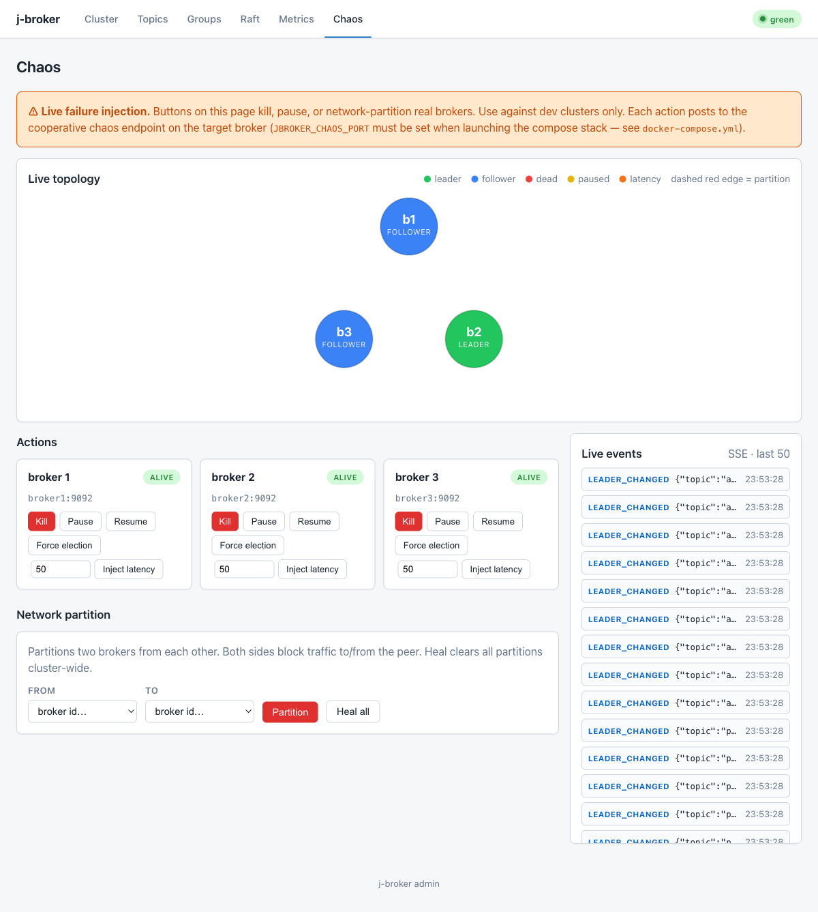

Security
Authentication, authorization, and the switches that separate a dev sandbox from something you can point real traffic at.
The model in one paragraph: a fresh j-broker is default-open for development — plaintext gRPC, no client identity, no ACL checks, admin UI open. Security is layered on by explicit opt-in: tls.enabled puts mTLS on every gRPC hop (clients, inter-broker replication, admin-to-broker), auth.mode=mtls turns the client certificate CN into an authenticated principal and flips authorization to default-deny ACLs, operator accounts lock the admin UI/API, and the chaos control plane refuses to exist without its own opt-in plus a bearer token. Each layer is independent, but the order above is the sensible rollout order.
mTLS end to end
1. Mint a dev CA and certs
scripts/tls/bootstrap-ca.sh .tls # default OUTDIR .tls/
scripts/tls/bootstrap-ca.sh --clean # wipe + regenerateProduces, under a self-signed 3650-day CA: per-broker server certs broker1–broker3 (SANs cover DNS:brokerN, DNS:localhost, IP:127.0.0.1 so both Docker Compose and host-side clients validate), a client cert for the admin app (CN=admin), and two extra client principals alice and bob for ACL experiments. All certs are 825-day, keys are converted to PKCS#8 in place (what gRPC's SslContextBuilder expects). The script is idempotent and dev-only — keys are unencrypted and the SANs are hardcoded; use a real issuer such as cert-manager in production.
2. Enable TLS on the brokers
j-broker server ... \
--tls-cert .tls/broker1.crt --tls-key .tls/broker1.key --tls-trust .tls/ca.crt
# config keys / env: tls.enabled (JBROKER_TLS_ENABLED), tls.cert, tls.key, tls.trustWith tls.enabled, every gRPC listener and every inter-broker client speaks mTLS — peers are verified against the trust bundle in both directions. All three PEM paths are required. Plain mode stays fully supported for dev; nothing forces TLS on.
3. Client TLS config (Java)
The Java client takes a jbroker.tls.TlsConfig record — enabled, PEM certChain, PKCS#8 privateKey, and the trustStore CA bundle:
import jbroker.tls.TlsConfig;
var tls = new TlsConfig(true,
Path.of(".tls/alice.crt"), // cert chain this client presents
Path.of(".tls/alice.key"), // matching PKCS#8 key
Path.of(".tls/ca.crt"), // CA bundle to verify the brokers
false);
var client = new ClusterClient(List.of("localhost:9092"), config, tls);
// Plaintext: the two-arg constructor, equivalent to TlsConfig.DISABLED.4. Kubernetes / Helm wiring
kubectl create secret generic jbroker-tls \
--from-file=tls.crt=.tls/broker1.crt \
--from-file=tls.key=.tls/broker1.key \
--from-file=ca.crt=.tls/ca.crt
helm upgrade --install jb deploy/helm/j-broker \
--set tls.enabled=true --set tls.secretName=jbroker-tlsThe chart mounts the Secret (ca.crt + tls.crt + tls.key) on every broker pod and the admin app dials brokers with the same bundle (tls.adminClientSecretName points the admin at a separate client-cert Secret if you keep identities apart). For in-cluster SANs use scripts/tls/bootstrap-k8s.sh, which mints certs against the headless service DNS. Certs are read at process start — rotation is a Secret replace plus a rolling restart, and same-CA rotation keeps every existing client working; the certificate-expiry runbook has the full procedure, including the two-step trust dance for rotating the CA itself.
Principals
Identity is the client certificate's CN, nothing more: --auth-mode mtls (config auth.mode, env JBROKER_AUTH_MODE) derives the principal from the verified peer certificate's CN, rejects any RPC that arrives without one, and requires tls.enabled. So the cert CN=alice from the bootstrap script is the principal alice. Two consequences:
- Inter-broker replication and the admin app authenticate the same way. Their CNs must be in
super.usersbefore you flipauth.mode=mtls, or the cluster locks itself out — with the k8s bootstrap script's shared certs that issuper.users=broker,admin(the Helm chart'sbroker.auth.superUsersdefault). - Issuing a cert is granting an identity. Guard the CA key accordingly.
ACLs
With auth.mode=mtls, authorization is default-deny: a principal may do exactly what an allow entry grants, and super.users bypass the checks entirely. Denied RPCs fail with UNAUTHORIZED. An ACL entry has five parts:
| Field | Values | Meaning |
|---|---|---|
principal | cert CN | Who the entry is about. |
resource_type | topic | group | cluster | What kind of resource. |
resource_name | name, or prefix with prefix: true | Exact name unless prefix is set; * matches everything. |
operation | produce | consume | admin | * | What the principal may do. |
allow | true | Grant flag. Not part of the identity key on delete. |
Management is the three RPCs on the jbroker.broker.Admin gRPC service — CreateAcl, DeleteAcl, ListAcls (there is no j-broker admin CLI verb or REST path for ACLs). Create and delete propose a metadata record through Raft on the controller — non-leaders answer NOT_LEADER with the usual suggested-leader hints — and the replicated entry reaches every broker's cache, so ListAcls answers locally anywhere. A worked grant for one producing principal and one consuming principal, using grpcurl with the certs minted above (the caller must be a super-user or hold an admin grant). The broker does not serve gRPC reflection, so hand grpcurl the proto:
ACL() { grpcurl -import-path proto/src/main/proto -proto broker.proto \
-cacert .tls/ca.crt -cert .tls/admin.crt -key .tls/admin.key "$@"; }
# alice may produce to any topic starting with "orders-":
ACL \
-d '{"entry": {"principal": "alice", "resource_type": "topic",
"resource_name": "orders-", "prefix": true,
"operation": "produce", "allow": true}}' \
localhost:9092 jbroker.broker.Admin/CreateAcl
# bob may consume those topics, and needs his consumer group too:
ACL \
-d '{"entry": {"principal": "bob", "resource_type": "topic",
"resource_name": "orders-", "prefix": true,
"operation": "consume", "allow": true}}' \
localhost:9092 jbroker.broker.Admin/CreateAcl
ACL \
-d '{"entry": {"principal": "bob", "resource_type": "group",
"resource_name": "orders-readers", "prefix": false,
"operation": "consume", "allow": true}}' \
localhost:9092 jbroker.broker.Admin/CreateAcl
# List everything; delete by the same identity key (allow is ignored):
ACL localhost:9092 jbroker.broker.Admin/ListAcls
ACL \
-d '{"entry": {"principal": "alice", "resource_type": "topic",
"resource_name": "orders-", "prefix": true, "operation": "produce"}}' \
localhost:9092 jbroker.broker.Admin/DeleteAclAclReplicationIT pins both behaviors.Admin UI / API auth
Operator login is opt-in via jbroker.admin.auth.users — comma-separated name:bcrypt-hash pairs. Empty means the admin app is open (it logs a startup warning, matching pre-auth deployments). When set, every surface is gated: browsers authenticate through the /login form (session), scripts send Authorization: Bearer tokens. Unauthenticated API calls get 401 JSON; UI paths redirect to /login. POST /api/v1/tokens mints an API token and POST /api/v1/tokens/revoke kills one. /login, /logout, static assets and /actuator/* (the Prometheus scrape point) stay open. Every authenticated mutation is written to the jbroker.audit logger as who method path.
On Helm, point admin.auth.existingSecret at a Secret whose users key holds the same pairs:
kubectl create secret generic jbroker-admin-users \
--from-literal=users="op:$(htpasswd -bnBC 10 '' 's3cret' | tr -d ':\n')"
helm upgrade jb deploy/helm/j-broker --set admin.auth.existingSecret=jbroker-admin-usersChaos endpoint gating
Every broker can expose a cooperative chaos HTTP control plane (kill, pause, force-election, network partition, latency injection) — the engine behind the UI's Chaos page. It is triple-gated: chaos.port is -1 (disabled) by default, the port refuses to bind without the explicit chaos.enabled opt-in, and once enabled every request must present the chaos.token bearer token — the broker refuses a chaos port without one. On Helm the token lives in a Secret named by broker.chaosTokenSecret, and the chart's NetworkPolicy keeps the chaos port admin-only. Leave the whole surface off outside failure-testing environments.

The chaos page's per-broker kill/pause/partition actions — exactly why this surface is disabled by default and token-gated when on.
Hardening checklist
What to flip before pointing real traffic at a cluster, in rollout order:
| Switch | Setting | Default | Do |
|---|---|---|---|
| TLS on every gRPC hop | tls.enabled + tls.cert/key/trust (Helm: tls.enabled, tls.secretName) | off | Enable with certs from a real issuer; calendar the expiry — no metric warns you. |
| Super-users seeded | super.users (Helm: broker.auth.superUsers) | empty | Add the inter-broker and admin-app cert CNs before enabling mtls auth. |
| Client authentication | auth.mode=mtls | none | Enable; principal-less RPCs are then rejected and ACLs enforce default-deny. |
| ACL grants | Admin/CreateAcl | none (deny all) | Grant each workload principal the minimum produce/consume/admin scope. |
| Admin operator login | jbroker.admin.auth.users (Helm: admin.auth.existingSecret) | open + warning | Set before exposing the UI beyond the cluster; use bearer tokens for automation. |
| Chaos control plane | chaos.enabled / chaos.port / chaos.token | disabled | Keep off. If used for drills, token-gate it and never expose the port. |
| Network reachability | Helm networkPolicy.enabled + clientFrom/adminFrom | off | Lock Raft to brokers, chaos/Redis to the admin, and scope client + UI ports (needs an enforcing CNI; add Prometheus to adminFrom). |
| Admin exposure | Helm admin.ingress.enabled | off | Only behind HTTPS, only with operator auth on. |
Vulnerability reports: see SECURITY.md.